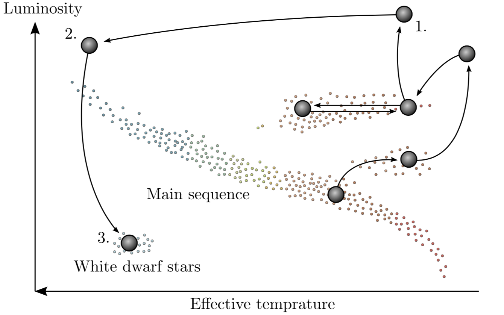

Forrige side🙂 🙁Stjerner med lav massePADLET
 Var det slik du tenkte? Vi kommer nærmere og nærmere kjernen, der er temperaturen høyere så vi går mot venstre i HR-diagrammet. Etterhvert krymper radiusen kraftig slik at luminositeten også minsker (husk L = 4πR2σT4). Enig? Men hva skjer så videre med den hvite dvergen? Hva tror du skjer med den de neste millioner av år?